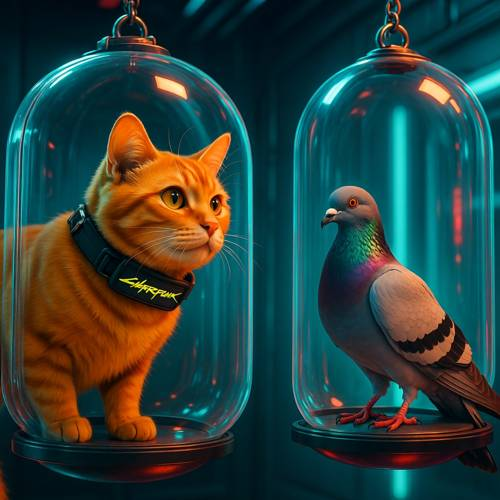
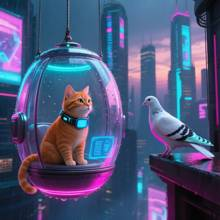
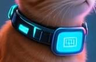
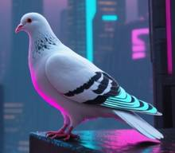
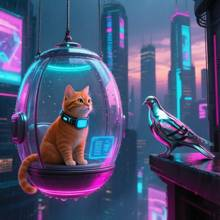
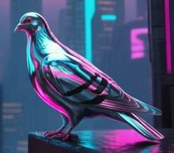

Entity Layout — In Cyberpunk style, an orange cat wearing a translation collar was on
In Cyberpunk style, an orange cat wearing a translation collar was on the left side of the transparent suspension cabin, looking curiously at a dove with metal feathers on the right side of the cabin.

Direct — one call, no iterationContinuum — Qwen3.8-27B + Qwen-Image
Judge — Direct
PASSEntity Layout - Two-Dimensional Space — The image displays two separate transparent capsules. An orange cat is in the capsule on the left side of the frame, and a dove is in the capsule on the right side of the frame.
PASSStyle — The image has a Cyberpunk aesthetic, featuring a dark environment illuminated by turquoise neon lights, and high-tech elements such as the suspension capsules and the cat's collar.
PASSRelationship - Inclusion — The image shows an orange cat contained within a transparent suspension capsule on the left and a dove contained within a separate, identical capsule on the right.
FAILCompound - Feature Matching — The image depicts an orange cat wearing a futuristic black collar with yellow text. However, the dove has natural-looking feathers with some iridescence on its neck, but they do not appear to be made of metal.
Judge — Continuum
PASSEntity Layout - Two-Dimensional Space — The image places the orange cat inside a suspended cabin on the left side of the composition, while the dove is positioned on a ledge on the right side of the composition, to the right of the cabin. This matches the required layout.
PASSStyle — The image is rendered in a distinct Cyberpunk style, evidenced by the futuristic city skyline with neon-lit skyscrapers, the advanced technology of the suspended pod and the cat's collar, and the overall dark, rainy, high-tech aesthetic.
PASSRelationship - Inclusion — The orange cat is clearly visible sitting inside a transparent, suspended, pod-like cabin.
PASSCompound - Feature Matching — The cat is orange and wears a glowing, high-tech collar. The dove has a silver, metallic sheen with reflections on its body, consistent with the description of having metal feathers.
What the agent did
Thinking
Let's create this image. The prompt: cyberpunk style, an orange tabby cat wearing a translation collar (a translator collar, something that displays text or translation — like a sci-fi translation device with a little screen), on the left side of a transparent suspended cabin (a transparent suspended capsule/gondola — a glass pod suspended in the air, cyberpunk city in the background). It's curiously gazing at a dove with metal feathers on the right side of the cabin. In other words, the cabin is a transparent capsule, and the cat is on the left side, the dove is on the right side, and the two are gazing at each other. Let's generate with qwen-image. I'll write a detailed prompt. After that, I'll check the text on the translation collar (if text is displayed, I'll verify by zooming in), and edit as necessary. Let's start with the generation.
Step 1 — `generate_image`
{
"prompt": "Cyberpunk style digital art. A futuristic transparent glass suspension cabin (a sleek clear capsule gondola suspended by cables above a rainy neon city skyline with holographic ads and glowing skyscrapers at dusk). Inside the cabin, on the LEFT side, sits an orange tabby cat wearing a high-tech translation collar with a small glowing blue HUD screen showing tiny text glyphs, the cat looking over curiously to the right. On the RIGHT side of the cabin, perched on a ledge, is a white dove with polished chrome and brushed-metal feathers, catching cyan and magenta neon reflections, looking back at the cat. The cat and dove make curious eye contact across the glass cabin. Neon cyan and magenta lighting, rain droplets on the transparent cabin, cinematic composition, detailed sci-fi atmosphere.",
"model": "qwen-image"
}
Result img_0

Thinking
The image is overall good. The cat is on the left side of the transparent cabin, wearing a translation collar with a screen, and gazing curiously at a pigeon on the right. The pigeon is outside the cabin, perched on a ledge. The prompt said "a pigeon with metal feathers on the right side of the cabin," and it's ambiguous whether the pigeon should be inside or outside, but in the current state (outside, on a ledge on the right side of the cabin) the meaning is satisfied. The pigeon's feathers are white with black patterns, and don't really look like metal. The prompt called for a "metal-feathered pigeon." Let me zoom in on the pigeon's collar area and the pigeon's feathers to check. Checking the details: I'll use inspect_region on the collar and on the pigeon.
Model
I've generated a good first pass — cat on the left in a transparent cabin, dove on the right. Let me inspect the details: the collar screen and the dove's feathers.
Step 2 — `inspect_region`
{
"image": "img_0",
"roi": "the cat's collar with the screen",
"padding": 0.1
}
Result img_1

Step 3 — `inspect_region`
{
"image": "img_0",
"roi": "the white dove",
"padding": 0.1
}
Result img_2

Thinking
The collar has a glowing screen displaying what looks like small text glyphs — good, it reads as a translation collar. The screen displays a small square icon/text, no problem. Dove: currently it's white with black spots and black-and-white wing bars, and the feathers look like ordinary pigeon feathers, not metal. The prompt explicitly states "a dove with metal feathers." Should edit the dove's feathers to be metallic (chrome/brushed metal) while keeping everything else the same. Use edit_image to target the dove and change its feathers to polished metal. Delta-only prompt: "Change the dove's feathers to polished metal — chrome and brushed-steel feathers with metallic sheen reflecting neon cyan and magenta light. Keep the dove's pose, position, and everything else in the image exactly the same." Might want to pass img_0 as a reference to lock the overall look. Actually, references are for preserving visual aspects. Let's use the references parameter with img_0. Hmm, the model is qwen-image for editing. Let's give it a try.
Model
The collar screen looks good — it reads clearly as a glowing translation device. However, the dove's feathers are ordinary white/black pigeon feathers, not the requested **metal feathers**. I'll fix that.
Step 4 — `edit_image`
{
"image": "img_0",
"references": [
"img_0"
],
"prompt": "Change the dove's feathers to polished metal: chrome, gunmetal and brushed-steel metal feathers with a strong metallic sheen, reflecting cyan and magenta neon light. Keep the dove's exact pose, position, size and the rest of the image (cat, cabin, city) completely unchanged.",
"model": "qwen-image"
}
Result img_3

Thinking
The pigeon is now metallic — chrome/metallic feathers reflecting cyan and magenta. The cat and the cabin are preserved. The overall scene is great. Small check: does the pigeon still look like a "pigeon" — yes, it has a pigeon-like shape, and now its metallic feathers are reflecting neon. Good. One minor point: the pigeon looks somewhat like a dark metallic statue, but it clearly is a metallic-feathered pigeon, and the eye is still visible. Good enough — this is a stop condition. Let's zoom in on the pigeon to check whether it's maintained as a bird with recognizable head/eye. Quick check.
Model
The dove now has metallic chrome feathers while the rest of the scene is preserved. Quick verification of the dove's detail:
Step 5 — `inspect_region`
{
"image": "img_3",
"padding": 0.1,
"roi": "the metal dove"
}
Result img_4

Thinking
The metallic feathered pigeon looks great — polished chrome/metallic feathers, glowing red eyes, still recognizable as a pigeon in the correct pose, perched on a ledge on the right side of the cabin. The overall image meets all the prompt requirements: - Cyberpunk style ✓ (neon city, rain, holograms) - Orange tabby cat wearing a translation collar ✓ (glowing HUD screen on the collar) - Cat is on the left side of the transparent suspended cabin ✓ - Cat is gazing with curiosity ✓ (looking at the pigeon) - Feathered pigeon is on the right side of the cabin ✓ - Metal feathers ✓ Mark img_3 as the best and stop.
Model
Everything checks out — the metal dove reads clearly with a visible eye, chrome feather layers, and neon reflections, perched at the right side of the cabin, while the orange cat with its glowing translation collar looks over at it from the left.
Step 6 — `mark_best`
{
"image": "img_3",
"reason": "All prompt elements present: cyberpunk neon city, orange cat with glowing translation collar on the left inside a transparent suspension cabin, curiously looking at a metal-feathered chrome dove on the right side of the cabin."
}
Thinking
Done. The best mark is on the latest image, img_3, which is the final version. I'll summarize for the user.
Model
Done! Here's the final image: a cyberpunk rain-soaked neon city at dusk, with a transparent suspension cabin hanging from cables. Inside on the left, an orange tabby cat sits wearing a high-tech translation collar with a glowing blue HUD screen, gazing curiously across the glass. On the right, perched on a ledge beside the cabin, a dove with polished chrome and gunmetal feathers reflects the cyan and magenta city lights as it looks back. The first generation had plain white feathers on the dove, so I made one targeted edit to give it the metallic feather treatment while preserving the cat, cabin, and city. The best version is marked and ready.